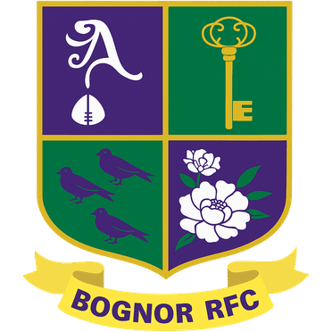

Bognor RFC
Bognor Regis, West Sussex
West Sussex coastal resort club with a large membership and competitive county and regional rugby.
View Profile
Sussex has a rugby union club in almost every town, from the coast to the Weald. This page lists the 15 East and West Sussex clubs in our directory.
Clubs include Brighton, one of the oldest in the south, plus Worthing, Horsham, Uckfield, Eastbourne and Chichester.
Sussex rugby clubs are spread along the coast and through the Weald. Brighton, Worthing, Eastbourne and Hastings & Bexhill cover the coast. Horsham, Crawley, Haywards Heath and Burgess Hill cover mid-Sussex. Uckfield, Crowborough and Lewes cover East Sussex, and Chichester, Bognor, Midhurst and Pulborough cover West Sussex.
| Area | Clubs (founded) |
|---|---|
| Brighton and Lewes | Brighton RFC (1868), Lewes RFC (1929) |
| East Sussex Weald | Uckfield RFC (1936), Crowborough RFC (1927) |
| East Sussex coast | Eastbourne RFC (1878), Hastings & Bexhill RFC (1926) |
| Mid Sussex | Haywards Heath RFC (1964), Burgess Hill RFC (1956) |
| North Sussex | Horsham RFC (1930), Crawley RFC (1962) |
| West Sussex coast | Worthing RFC (1921), Chichester RFC (1925), Bognor RFC (1933) |
| West Sussex rural | Midhurst RFC (1921), Pulborough RFC (1952) |
Choose a Sussex rugby club by location first. The county is long and the A27 and A23 shape travel times, so a club 15 minutes away is better than a stronger one an hour away. Then check whether the club runs the team you need, whether that is men's, women's, vets or juniors.
Crawley and Horsham are close to Surrey clubs such as Reigate & Redhill. Crowborough and Uckfield are near the Kent border, with Tunbridge Wells close by.
Our directory lists 15 rugby clubs in Sussex: all 15 rugby union. The oldest is Brighton RFC, founded in 1868, and 2 of the 15 were formed before 1900. Rugby clubs in Sussex cover both East and West Sussex, from Chichester to Hastings.
| Club | Code | Founded | Town |
|---|---|---|---|
| Brighton RFC | Rugby union | 1868 | Brighton |
| Eastbourne RFC | Rugby union | 1878 | Eastbourne |
| Midhurst RFC | Rugby union | 1921 | Midhurst |
| Worthing RFC | Rugby union | 1921 | Worthing |
| Chichester RFC | Rugby union | 1925 | Chichester |
| Hastings & Bexhill RFC | Rugby union | 1926 | Hastings |
| Crowborough RFC | Rugby union | 1927 | Crowborough |
| Lewes RFC | Rugby union | 1929 | Lewes |
| Horsham RFC | Rugby union | 1930 | Horsham |
| Bognor RFC | Rugby union | 1933 | Bognor Regis |
| Uckfield RFC | Rugby union | 1936 | Uckfield |
| Pulborough RFC | Rugby union | 1952 | Pulborough |
| Burgess Hill RFC | Rugby union | 1956 | Burgess Hill |
| Crawley RFC | Rugby union | 1962 | Crawley |
| Haywards Heath RFC | Rugby union | 1964 | Haywards Heath |
Founding years as listed on each club profile in the UK Rugby Club Directory, checked 4 November 2026.
In practice: an older club is not automatically a bigger or stronger one. Check each profile for the club's current league and teams, and ask the club what it runs this season.
To join a rugby club in Sussex, find the nearest club in West or East Sussex, contact it and go to a training session. Rugby clubs in Sussex are affiliated to the RFU through Sussex RFU. Most run several adult teams, so beginners get games at the right level.
Our directory currently lists 15 clubs in Sussex. If a club is missing, you can register it for free.
Yes. Uckfield RFC, founded in 1936, runs senior and junior teams. Crowborough and Lewes are also nearby.
Pick two or three clubs near you, check each club's profile for where it plays and how to get in touch, then ask about the next training session. Our guide to finding a rugby club walks you through it.
Brighton RFC, founded in 1868, is the oldest of the rugby clubs in Sussex that we list. Eastbourne RFC (1878) is next.
We list 15 rugby clubs in Sussex, all rugby union, across West Sussex, Mid Sussex and East Sussex.
We add new clubs regularly. If your club is not listed yet, register it for free so players searching near you can find it.
Register Your Club Free